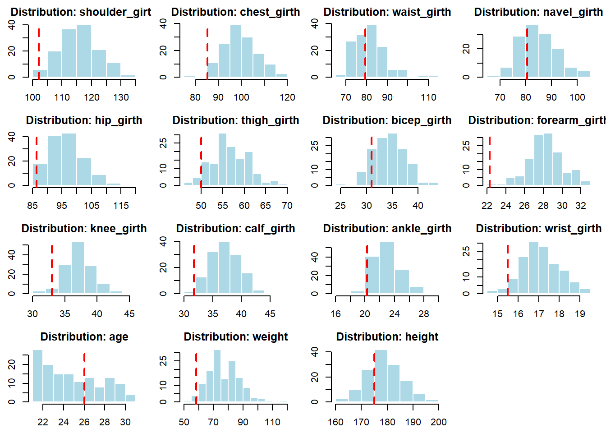
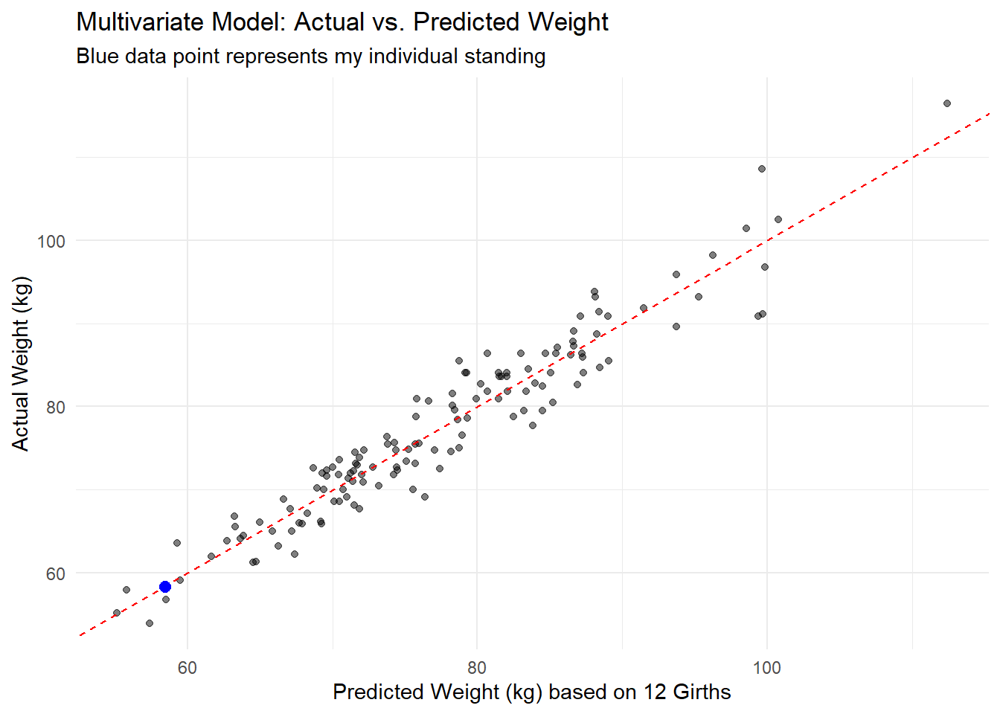
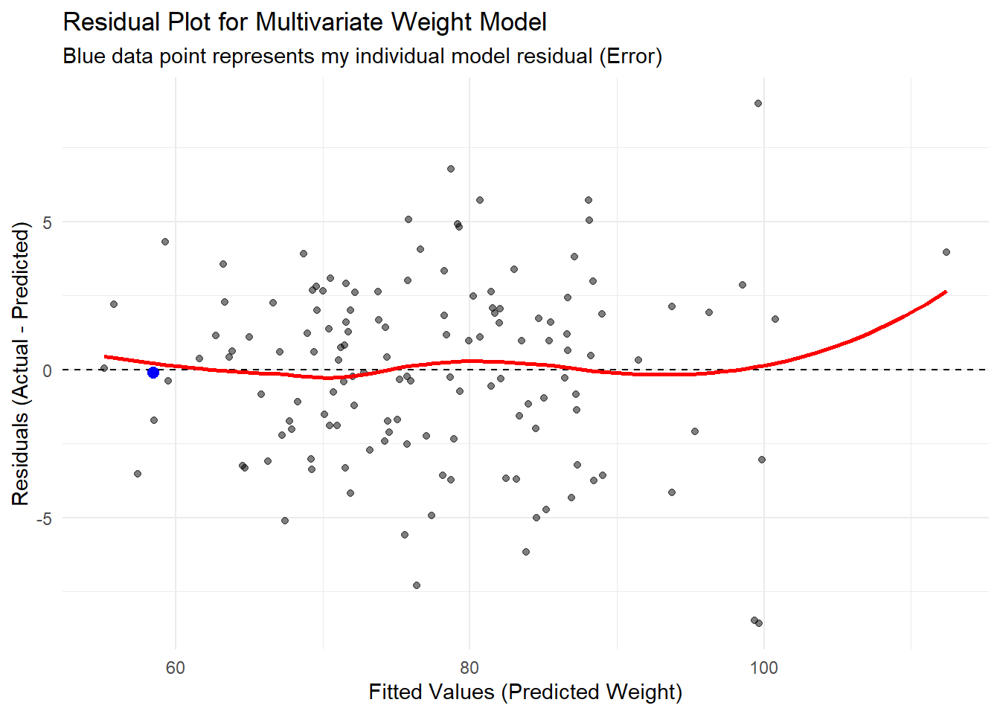

Table: Data Dictionary for Body Dimensions Measurement Analysis
|Variable |Description |Units |R_Type |
|:--------------|:-------------------------------------------------------------------------------------------|:------|:------|
|shoulder_girth |Shoulder girth over deltoid muscles |cm |double |
|chest_girth |Chest girth at nipple line in males and just above breast tissue in females, mid-expiration |cm |double |
|waist_girth |Waist girth, narrowest part of torso below the rib cage, (avg. of contracted/relaxed) |cm |double |
|navel_girth |Abdominal girth at umbilicus using iliac crest as landmark |cm |double |
|hip_girth |Hip girth at level of bitrochanteric diameter |cm |double |
|thigh_girth |Thigh girth below gluteal fold, (average of right and left sides) |cm |double |
|bicep_girth |Bicep girth, flexed, (average of right and left sides) |cm |double |
|forearm_girth |Forearm girth, extended, palm up, (average of right and left) |cm |double |
|knee_girth |Knee girth over patella, slightly flexed position, (average of right and left) |cm |double |
|calf_girth |Calf maximum girth, (average of right and left) |cm |double |
|ankle_girth |Ankle minimum girth, (average of right and left) |cm |double |
|wrist_girth |Wrist minimum girth, (average of right and left) |cm |double |
|age |Age |years |double |
|weight |Weight |kg |double |
|height |Height |cm |double |
|gender |Gender (0 = Female, 1 = Male) |Factor |factor |STAT 107 Project
Introduction
This dataset contains 21 body dimension measurements as well as age, weight, height, and gender on 507 individuals. The 247 men and 260 women were primarily individuals in their twenties and thirties, with a scattering of older men and women, all exercising several hours a week. The original dataset contains skeletal and muscular girth measurements. For this project I will be analyzing the below muscular girth measurements as well as age, weight, height, and gender. I am omitting the skeletal data because I am unable to measure my own bone structure for the purpose of my research question.
My research question is figuring out the statistics of where my personal muscular girth measurements would place me within a 10 year range. Comparing myself to these physically active individuals, I should be on the low tail of the data since I do no workout often. I do partake in latin dancing at least an hour or two every week and I walk my dog a minimum of 30 minutes a day, but that is probably far different than active lifestyle of individuals in the original data. That is, where does a 26-year-old lightly active male place relatively to highly active young adults of age 21 - 31 in terms of weight? I also seek to discover if my weight follows the same trend when accounting for all muscular girth measurements.
Methods
First I will look at where I land compared to three groups, Group A: 21 - 31 year old males, Group B: 21 - 31 year old females, Group C: 21 - 31 year old females and males. This will be done by comparing my position across the 3 distributions and determine my standing through z-score and percentile rankings with Group A. For Group B and C, I will be producing a table comparing the averages as they are not my main focus group for comparison.
First, I created a table using bind_rows() and summarise() to calculate the averages across all the columns, except gender. That table exists for simple comparison between all the three groups.
I then used hist() in a for loop to graph small histograms with a red abline() showcasing where my measurements land according to the distribution of each category compared to Group A.
Table: Average Measurements (Ages 21-31)
|Group | shoulder_girth| chest_girth| waist_girth| navel_girth| hip_girth| thigh_girth| bicep_girth| forearm_girth| knee_girth| calf_girth| ankle_girth| wrist_girth| age| weight| height|
|:--------|--------------:|-----------:|-----------:|-----------:|---------:|-----------:|-----------:|-------------:|----------:|----------:|-----------:|-----------:|-----:|------:|------:|
|Me | 102.20| 85.20| 79.50| 80.50| 86.30| 50.00| 31.00| 22.30| 33.00| 31.75| 20.30| 15.50| 26.00| 58.35| 175.00|
|Males | 116.15| 99.85| 81.65| 85.12| 96.87| 56.74| 34.42| 28.34| 37.16| 37.19| 23.06| 17.15| 25.26| 77.37| 178.64|
|Females | 100.23| 85.45| 68.95| 81.84| 94.87| 57.00| 27.75| 23.63| 35.22| 35.03| 21.27| 15.04| 25.02| 60.16| 165.85|
|Combined | 108.62| 93.04| 75.64| 83.57| 95.92| 56.87| 31.27| 26.11| 36.24| 36.17| 22.22| 16.15| 25.14| 69.23| 172.59|
Next, I will check for normality before conducting my statistical inference of whether I can reject or fail to reject the hypothesis of my values being statistically lower than the average of Group A, which is the most relevant subgroup. Although visually I appear to be below the mean in most categories, I am choosing weight as an overall variable to determine if that is statistically true. This is done through a one sided t-test with hypothesis: \(H_0: \mu_{\text{weight}} = 58.35\) \(H_A: \mu_{\text{weight}} > 58.35\)
Finally, I will check all categories through a multivariate linear regression model to analyze if all the muscular girths to predict weight can determine if my weight truly is truly different than the trend of active individuals.
Results
One Sample t-test
data: group_males$weight
t = 20.616, df = 136, p-value < 2.2e-16
alternative hypothesis: true mean is greater than 58.35
95 percent confidence interval:
75.84416 Inf
sample estimates:
mean of x
77.37226 A p-value < 2.2e-16 at \(\alpha = 0.05\) determines that we can reject the null hypothesis. That is, the mean weight of Group A is not 58.35 kg, but rather much higher around 77.37 kg.
So I am statistically far below the mean—specifically, -1.761 standard deviations away from the mean weight of active males between ages 21–31. This places me in the bottom 3.91% compared to the active males of Group A.
Call:
lm(formula = weight ~ shoulder_girth + chest_girth + waist_girth +
navel_girth + hip_girth + thigh_girth + bicep_girth + forearm_girth +
knee_girth + calf_girth + ankle_girth + wrist_girth, data = group_males)
Residuals:
Min 1Q Median 3Q Max
-8.5818 -2.0979 0.3631 2.0472 8.9849
Coefficients:
Estimate Std. Error t value Pr(>|t|)
(Intercept) -102.97328 6.44599 -15.975 < 2e-16 ***
shoulder_girth 0.25300 0.08038 3.147 0.002063 **
chest_girth 0.12701 0.08819 1.440 0.152345
waist_girth 0.38537 0.09488 4.062 8.58e-05 ***
navel_girth 0.07443 0.08212 0.906 0.366502
hip_girth 0.41265 0.12130 3.402 0.000901 ***
thigh_girth 0.20880 0.15852 1.317 0.190215
bicep_girth -0.07772 0.22919 -0.339 0.735104
forearm_girth 0.40980 0.39762 1.031 0.304719
knee_girth 0.58986 0.21353 2.762 0.006613 **
calf_girth 0.12551 0.18927 0.663 0.508455
ankle_girth -0.05395 0.24946 -0.216 0.829122
wrist_girth 0.83804 0.56421 1.485 0.139996
---
Signif. codes: 0 '***' 0.001 '**' 0.01 '*' 0.05 '.' 0.1 ' ' 1
Residual standard error: 3.205 on 124 degrees of freedom
Multiple R-squared: 0.9197, Adjusted R-squared: 0.912
F-statistic: 118.4 on 12 and 124 DF, p-value: < 2.2e-16

There is 0.912 variability accounted for by the 12 girth measurements, so this model should be a good prediction model for the weight of active males.
Looking at my blue data point, I follow the trendline and so although I was statistically below the average for weight, when I account for all variables I am actually inline with the group of active individuals.
Looking at the residual plot, my predicted weight should lie on the red trendline, but I am slightly below which means **my actual weight of 58.35 kg is less than the model’s prediction of 58.46 kg . This results in a negative residual of -0.11. This could suggest that relative to the active males, I have a lower mass density, either muscle or the unmeasured bone / skeletal density, than an average active male with my specific frame size and muscular girths.
Discussion
Overall, I found that while I was below the mean in all stats of muscular girth, I am actually not too different when comparing my weight compared to my overall girth measurements. Although I am slightly below, my results show that with a bit of exercise I have the ability to reach those same girths. The skeletal density due to having a smaller frame is an interesting component that I would love to get professionally measured. Which leads me to the one thing that I would do differently is get my measurements done professionally rather than using a simple tape measure and weight scale. My results are very interesting because I had always considered myself to be “skinny fat” but statistically showing that i am actually not too far off from what is deemed average is fascinating.